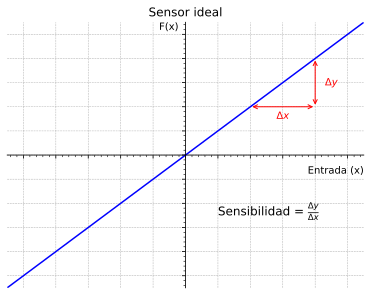

Robótica
Clase 13
Semana 18 - 08/26/2026
Percepción
Una de las tareas más importantes en sistemas autónomos es la de adquirir información acerca del entorno a través de Sensores

Encoders
Dispositivos que pueden detectar o medir desplazamiento angular (o lineal)
- Propioceptivos
- Clasificación primaria: Incrementales y Absolutos
- Principios de funcionamiento:
- Mecánico (Pasivo)
- Óptico (Activo)
- Magnético (Activo)


Encoders de cuadratura
Encoder magnético montado en motor DC con escobilla


Acelerómetro
Dispositivos electromecánicos que miden la aceleración a la que se encuentran afectados (propioceptivos y pasivos)
ADXL362: Accelerómetro de 3 ejes (3DoF)

Micro-Electro-Mechanical Systems (MEMS): Medición de la aceleración asociada a una masa en movimiento

Características de los acelerómetros
Problemas con el vector gravedad
\(\require{color}\)
- Cuando se utilizan 3 acelerómetros ortogonales, uno por cada eje \(\textcolor{red}{X}\), \(\textcolor{green}{Y}\), \(\textcolor{blue}{Z}\) por lo general se orienta el eje \(\textcolor{blue}{Z}\) paralelo al vector gravedad
- El vector gravedad \(\vec{g}\) queda perpendicular al eje \(\textcolor{red}{X}\) e \(\textcolor{green}{Y}\), lo que produce un valor \(0 [m/s^2]\) en ambos ejes (para el caso estático)
- Si el acelerómetro se rota ligeramente un ángulo \(\theta\) en el eje \(\textcolor{green}{Y}\), se genera una proyección del vector gravedad sobre el eje \(\textcolor{red}{X}\)
Esto puede ser útil para medir inclinación pero es un problema para aceleraciones en el plano 2D


Giróscopos
Dispositivos electromecánicos que miden la velocidad angular a la que se encuentran afectados (propioceptivos y pasivos)
LPY503AL: Giróscopo de 2 ejes (2DoF)

Medición de la velocidad angular

Ejemplo: BMI088
Table 4: Accelerometer specifications
Zero-g Offset(\(\mathrm{Off}\)): \(20 \mathrm{[mg]}\)Output Data Rate(\(\mathrm{ODR}\)): \(12.5 - 1600 \mathrm{[Hz]}\)Output Noise Density(\(\mathrm{n_{rms}}\)): \(190\) (Z-axis) \(160\) (X- & Y-axis) \(\mathrm{[\mu g / \surd Hz]}\)
Table 5: Gyroscope specifications
Zero-rate Offset(\(\mathrm{Off \, \Omega_x \Omega_y \Omega_z}\)): \(\pm 1 \mathrm{[°/s]}\)Data rate: \(2000, 1000, 400, 200, 100 \mathrm{[Hz]}\)Output Noise(\(\mathrm{n_{rms}}\)): \(0.1 \mathrm{[°/s]}\)